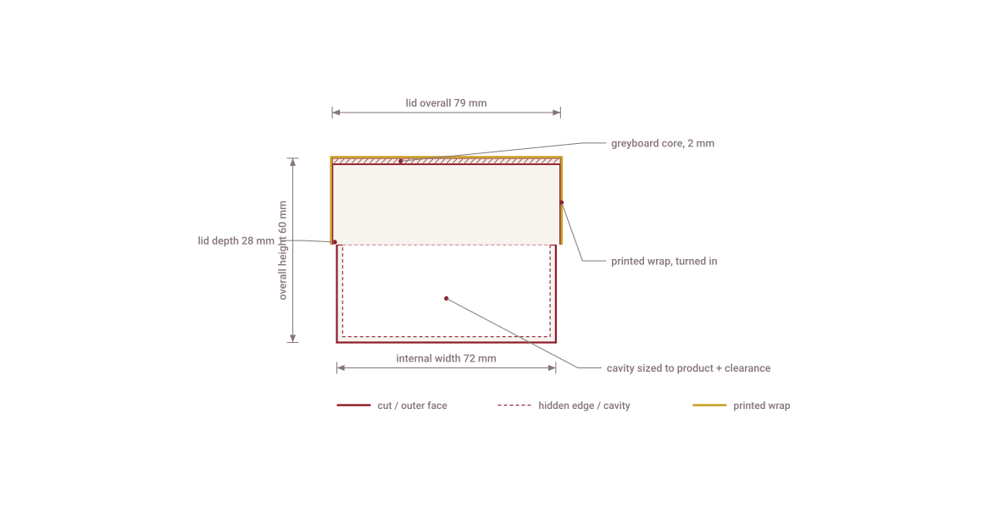

01
Slotted card box
One-piece card blank, grooved and laminated. The round-cornered side panels carry a long slot that holds the fitting, and the lid and base insert tab are cut on the same blank.
Structural reference
This page is the reference we work from: what each structure is for, how the drawing is laid out, and the trade terms that appear on a dieline. Nothing here is a client project — these are our own structural drawings, published so you can judge the work before you send anything.
Judge us on the dieline, the sample and a live walk of the workshop.

Reading the drawing
A dieline is read by convention. Once you know these four, you can check any drawing we send — including whether the grain runs the way the box needs it to.
If a structure is still unclear after reading, print the drawing small, cut it out and fold it. For a complex box that five-minute step saves a reprint. Every structure below is drawn twice: the flat sheet, and the same box made up as a white sample with our own mark, out in 7 days.
Structures
Five structures cover most briefs. Each one is drawn flat, because that is where the differences live — a tuck end and a crash-lock base look identical from the outside, and nothing alike on the sheet.
One-piece card blank, grooved and laminated. The round-cornered side panels carry a long slot that holds the fitting, and the lid and base insert tab are cut on the same blank.
E-flute carton with dust flaps and a glue flap. The tuck ends close by hand or on a line, so neither end needs glue.

One drawer box takes two knives: the outer-box greyboard, cut flat, and the printed wrap that is glued over it. The wrap folds its four flaps on the creases shown.

Product paper for one set, shown flat: the greyboard that gives the box its shape, and the printed wrap that is turned in over it. Each is cut on its own knife, and the wrap's corners fold on the creases shown.

Four knives for one product: the inner-box wrap and the greyboard it covers, then the case wrap and the greyboard that becomes the book cover. The case greyboard is drawn as one unit of a two-up imposition; its two vertical lines are the spine.
The carton above is a tuck end. If the job is a folding carton, the choice that changes the tool is how the base closes and which way the tucks face — the three options below are the ones we cut most.
| Straight tuck end | Reverse tuck end | Crash-lock bottom | |
|---|---|---|---|
| Tuck direction | Top and bottom tuck the same way | Bottom tuck faces the opposite way | Top tucks; base interlocks |
| How it closes | Hand or line, one end then the other | Either end first — useful when the product only loads one way | The base locks itself as the box is erected |
| Base strength | Standard | Standard | Stronger — the load sits on interlocked panels, not on a tuck |
| Packing speed | Two ends to tuck | Two ends to tuck | Fastest to pack — the base is already locked |
| Board | Paperboard | Paperboard | Paperboard, or E-flute when it needs to carry weight |
| Good for | Retail shelf, cosmetics, small electronics | Bottles and jars, where the product slides in from one end | E-commerce and heavier contents |
Section through a rigid box
A rigid box is not one material. It is a greyboard core, cut and assembled, then wrapped in printed paper that turns in over the edges. The section below is drawn to scale from our own standard construction — it is the drawing we would send with a quote, not a marketing diagram.

This is the same structure as the rigid boxes on the products page, drawn to be checked rather than admired.
Structure names
Structure names are how this trade is searched. Here is what each one means, and whether it is something we quote for. If a line says no, we would rather say so here than in a second email.
| Name | What it means | We make it |
|---|---|---|
| Full cover lid | A rigid lid that covers the whole base, sides included | Yes |
| Partial cover lid | A lid that covers the top and only part way down the sides | Yes |
| Shoulder and neck | A lid that steps out below a narrower neck, so the lid sits on a ledge | Yes — quoted case by case, because the step has to be drawn |
| Display box, with or without dust flaps | A carton with a cut-away front so the product shows on shelf; dust flaps close the gaps at the sides | Yes |
| Drawer box, with ribbon | A tray inside a sleeve, pulled out by a ribbon | Yes |
| Drawer box, with thumb notch | The same, but with a die-cut notch to grip instead of a ribbon | Yes |
| Magnetic lid | Hidden magnets hold a hinged or lift-off lid closed | Yes |
| Collapsible magnetic lid | A magnetic rigid box that ships flat and folds up at the point of use | Yes — the fold has to be drawn early, it changes the board |
| Die-cut insert | Board or foam cut to the shape of the product so it cannot move | Yes |
| Window patching | A film window glued over a die-cut opening | Yes |
| Hot-foil and emboss | Metallic foil stamped into the surface, or a raised relief | Yes |
| Soft-touch and spot UV | A matte, velvet-like varnish, or a gloss varnish in one area only | Yes |
| Moulded pulp or plastic trays | Shaped trays formed rather than cut from board | No — we can quote the box around a tray you supply |
| Injection-moulded parts | Rigid plastic components such as clasps or hinges | No |
Two of these we do not make. We would rather say that here than discover it in a second email — and for either one we can still draw and quote the box that goes around it.
A folding carton is obvious once you have folded one. These two are not, so here they are as animations — no video, no plug-in, and it works with JavaScript switched off.
The hinge is a fold, not a cut — which is why the cover, spine and back cover are one piece. Magnets sit under the front cover so it stays shut.
Two separate pieces. The sleeve is printed; the tray is usually left plain. The fit between them is the whole job, and it is set when the drawing is made.
Materials and finishing
These are the terms we use in a quote, in the same words. If a supplier answers these loosely, the sample will show it.
Next
If you already have a dieline, we will quote from it and tell you if anything on it will cause trouble. If you do not, send the product dimensions and we will draw the structure — that costs you nothing.